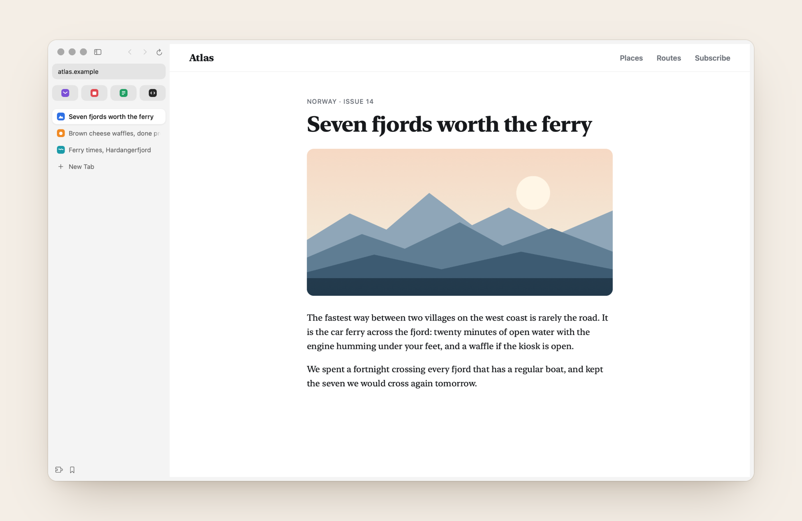

The tabs, and the page.
Tabs down the side, pins above them, and the page as one calm card. Nothing else sits in the window waiting for you. Click a tab over there. It works.
lun · Norwegian for warm and sheltered
Lun is a small, fast, quiet browser for the Mac. The tabs, and the page. That is all there is on screen.
Version 0.1.1 · 8 MB · Apple silicon · macOS 14 or later
Tabs down the side, pins above them, and the page as one calm card. Nothing else sits in the window waiting for you. Click a tab over there. It works.
Type an address or a search, or pick up where you were. Nothing else asks for your attention.
⌘T opens one. ⌘L takes you to the address from anywhere.
Split View keeps an article beside the timetable it talks about. ⌥-click a tab, drag one onto the page, or press ⌥⌘N.
Work in one, the trip in another, each with its own tabs, pins and colour. Swipe between them.
Down the left, down the right, across the top, or as a narrow strip of icons. ⌘S puts them away.
Quiet by nature
By itself, Lun only checks GitHub for a newer Lun, and the Chrome Web Store for newer versions of the extensions you installed.
And the rest
They are stopped before the page loads. Flip it and watch.
Leave the tab and it keeps playing in a corner. Small swipes place it, and a pinch sizes it.
See where it goes without leaving the page.
Leave them alone and they rest. Touch one to wake it.
Tabs, bookmarks, history and passwords, from the browser you are leaving.
Every one of them can be changed.
New tab
Kept in the macOS keychain, and checked for reused ones on your Mac only.
Inside

Yes. Lun is free and open source under the MIT licence. There is no account, no subscription and no telemetry.
Apple silicon Macs on macOS 14 or later. There is no build for Intel Macs yet; for now you can build it yourself.
Open Lun.dmg and drag Lun to Applications. It is signed and notarised, and keeps itself up to date from there.
Lun runs Chrome extensions on WebKit’s own extension engine, which needs macOS 15.4 or later. An extension that depends on Chrome-only features may not work.
On your Mac. Passwords are in the macOS keychain, tagged Lun. History, bookmarks and tabs are in ~/Library/Application Support/Lun/. Cookies and site data are in WebKit’s store for the app.
This is version 0.1.1. Expect rough edges, and say what you find. Every line is on GitHub under the MIT licence: read it, build it, or send a pull request.